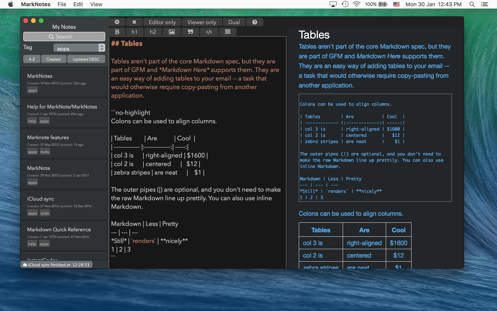
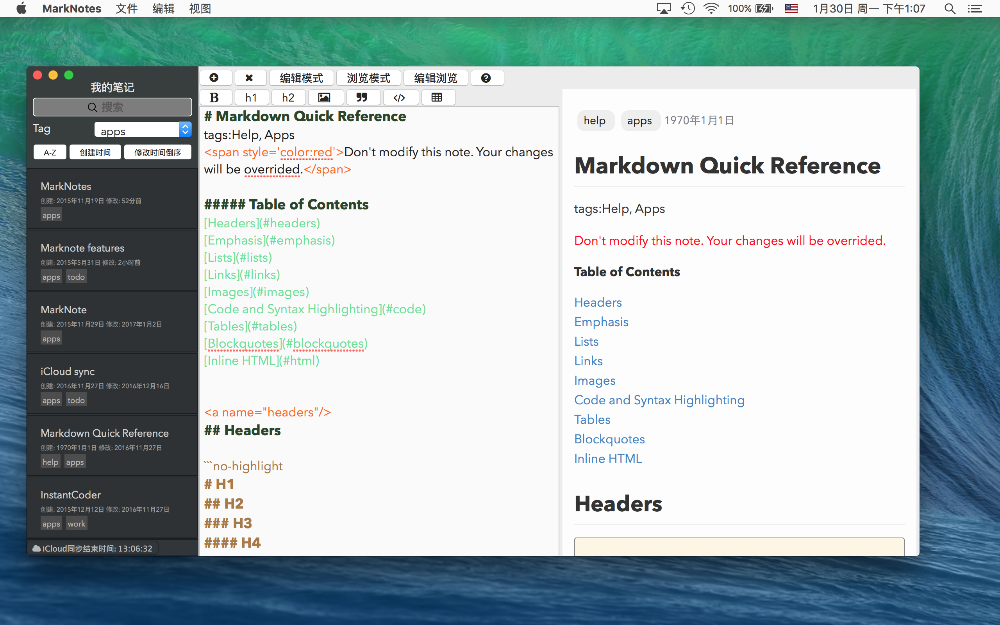

让macOS应用逼格++
tags:开发随笔
这是一个看脸的时代。一个少女即使蕙质兰心，如果没有娇美的韶容，也很难惹人注意；同样，一款应用即使功能强大体验如行云流水，如果没有酷炫的外观，也很难招来目光。
最近对我的笔记应用MarkNotes动了下小手术，稍加整容，顿感逼格++。
废话少说，先来个不看广告看疗效吧
改进后是这个样子的:

因为可以换肤，也可以是这个样子的:

改进前是这个样子的：
那么，我到底做了些什么呢
减少界面上的杂色
之前的界面，颜色看起来比较杂。
首先是tag 颜色太多。
当初在笔记列表中给tag添加颜色，主要是想让用户更容易分辨不同的tag，因此设计了一个简单的算法，让tag的颜色由 tag中的字符自动计算出来。但是花花绿绿的颜色确实降低了逼格，看起来不酷。
其次编辑器的颜色和外观不一致。
编辑器用柔和颜色的初衷是为了让用户在长时间编辑的时候不至于感觉刺眼。但是其颜色确实和外观有点违和。